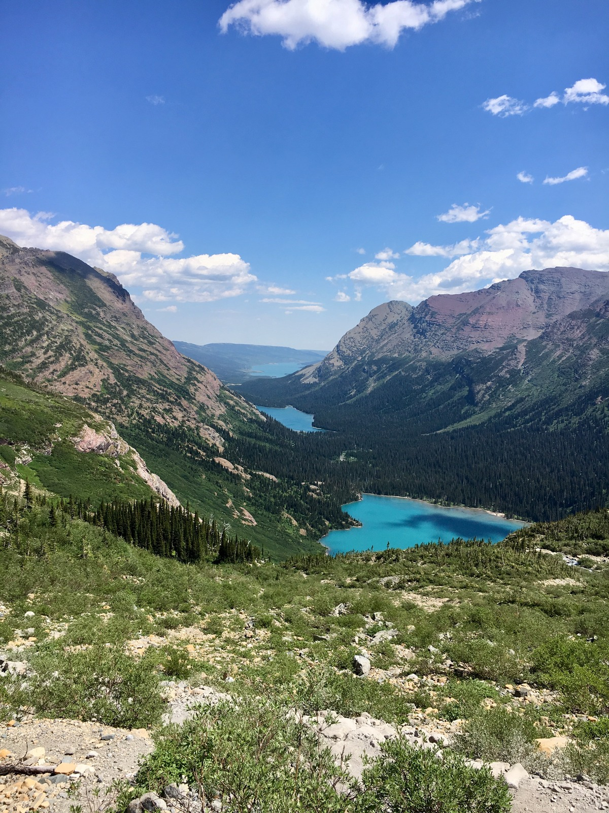

Wolf Natural Bridges at McCormick's Creek State Park
Map authored by Jamie Brown
McCormick's Creek State Park opened in the year 1916 and is Indiana's first state park. It is known for interesting geological features like the Wolf Natural Bridges. The map displays the site and elevation contours of the naturally occurring arches.The map was created using QGIS and Mapbox. Contours were extracted from USGS NED 1/3 arc-second raster digital elevation model. This data can be accessed at the USGS 3D Elevation Program (usgs.gov)

Photograph found on mccormickscreekstatepark.com